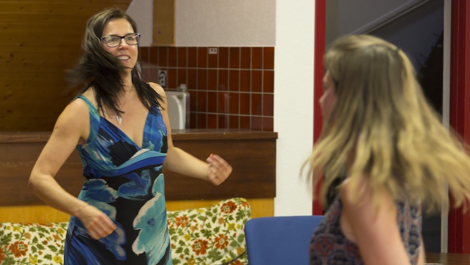

Chant Thérapeutique

Cours individuels destinés aux amateurs du chant qui aimeraient apprendre à utiliser leur voix pour améliorer leur état de santé physique et psychologique.
Niveaux : Débutant, Avancé, Artiste confirmé.
Les cours se déroulent soit en langue française, soit en anglais (ce qui, pour certains, est un excellent moyen d’apprendre ou pratiquer une langue étrangère tout en chantant!)
